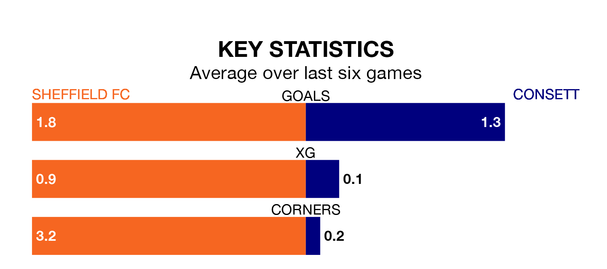

Consett travel for Saturday's match against Sheffield FC looking to bounce back from defeat last time out in the Northern Premier League Division One East.
Consett, who sit fourth in the league after 18 games, fell to a 3-2 away defeat to Stockton Town on December 26.
They face a Sheffield FC side who also lost their last match, a 2-1 defeat to Stocksbridge Park Steels, and who sit 15th in the table.
With 35 goals in 18 games so far this season, Consett are scoring more than average in the league with 1.9 goals per game. And they are conceding fewer than average, letting in 22 goals at a rate of 1.2 per game.
Sheffield FC, meanwhile, are average scorers, with 1.6 goals per game. They have conceded 1.8 goals per game.
The hosts are in mixed form in the Northern Premier League Division One East, with three wins and a draw from their last six games.
And also with three wins and a draw over that period, the away team's form is identical – they have both taken 10 points from 18.
Updated: 10:36, 03/01/24